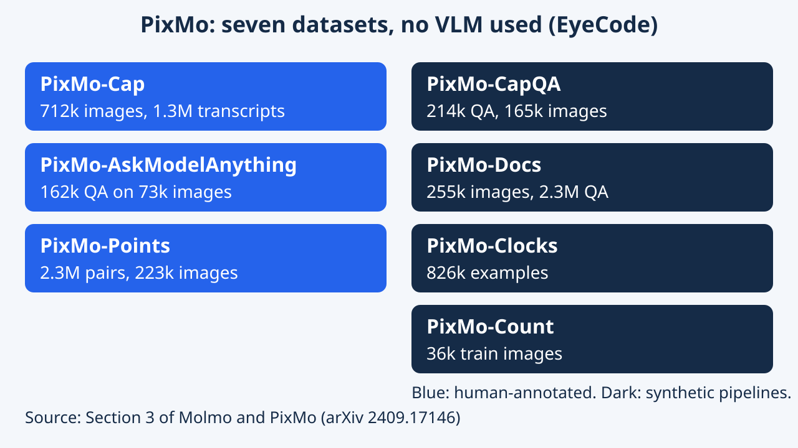
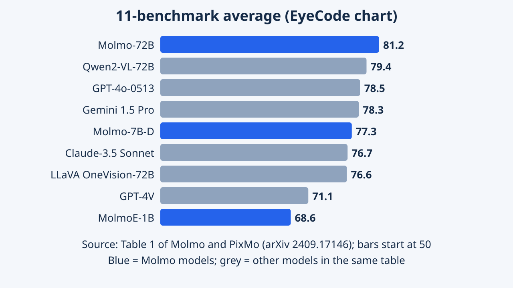

Molmo and PixMo: Open Weights and Open Data for State-of-the-Art Vision-Language Models
Studies open-data, open-weight vision–language models. Human-collected captions, question answering, and pointing data provide a basis for examining model choices and training pipelines without distilling proprietary VLM outputs.
The paper releases open weights, open data and code for vision-language models, and argues that careful human data collection can replace distillation from closed models. It received a Best Paper Honorable Mention at CVPR 2025. This article explains the data, the model and the evidence.
Overview
Molmo is a family of vision-language models that can describe pictures, answer questions about them and point at things in them. What makes it unusual is how it was built: the team collected its own training data from people instead of asking a paid commercial AI to write it. The weights, the data and the code are all shared.
Molmo and PixMo is a CVPR 2025 Best Paper Honorable Mention, according to the conference's official awards page. The paper presents two things together. Molmo is a family of open vision-language models (VLMs) built from a CLIP vision encoder and a language model. PixMo is a collection of seven datasets used to train them, three annotated by humans and four generated synthetically without any VLM.
The central claim is about provenance: strong open VLMs usually lean on data produced by proprietary VLMs, so they are effectively distilled copies. Molmo avoids that. Its largest model, Molmo-72B, scores highest on the authors' 11-benchmark average and ranks second in their human preference study, behind GPT-4o. These comparisons are the authors' own, run at a specific point in time (late 2024).
The paper has two intertwined contributions. First, PixMo: 712k densely captioned images, 162k question-answer pairs on 73k images, 2.3M pointing annotations, plus four synthetic sets for documents, clocks, captions-to-QA and counting. Second, Molmo: four models (MolmoE-1B, Molmo-7B-O, Molmo-7B-D and Molmo-72B) trained with a deliberately simple two-stage recipe.
The evaluation has two pillars. One is 11 academic benchmarks. The other is a human study with about 870 annotators and over 325k pairwise ratings, converted to Elo scores with a Bradley-Terry model. Ablations then isolate which data and design choices matter, which is arguably as valuable as the headline table because it tells others how to build such systems.
Research Problem
Imagine learning to cook only by copying a famous chef's finished dishes. You could get good at imitation, but you would not know how to create a recipe yourself. Many open AI models that understand images were trained by copying the outputs of closed models in this way. The authors wanted a recipe that does not depend on that.
The paper starts from a gap. The best VLMs (GPT-4o, Gemini 1.5, Claude 3.5 Sonnet) are closed. Early open projects such as LLaVA released weights and data but fell behind. Newer open-weight models either use proprietary data or train on synthetic captions from systems like GPT-4V, for instance ShareGPT4V. The authors argue this leaves the community without foundational knowledge about building a capable VLM from scratch.
Two practical obstacles follow. Crowd workers asked to type long image descriptions write short, shallow ones, and they can paste text from a commercial model. And grounding data such as bounding boxes or masks is slow to collect. The research problem is therefore both a data question (how to gather detailed, trustworthy human annotation cheaply) and a modeling question (how to use it well).
Framed more precisely, the paper asks whether open weights plus fully non-VLM-derived data can match proprietary systems. It identifies three data bottlenecks. Dense captions: people omit most visual content when typing. Instruction data: free-form answers need quality control. Grounding: boxes and masks are expensive, which limits training of models that can act, for example by indicating where to click or what to grasp.
The evaluation problem is also treated as part of the research problem. The authors note that benchmark numbers can shift by around 10 percent depending on prompts and processing, and that many details are unavailable for other models. This is why they argue for open evaluation and add a human preference study alongside benchmarks.
Key Idea
The big trick is to let people talk instead of type. Describing a picture aloud for a minute or more brings out far more detail than writing it. The second trick is to teach the model to point at things in a picture, and to count by pointing at each one in turn.
Three ideas carry the paper. Speech-based captioning: annotators speak about an image for 60 to 90 seconds, a speech-to-text system transcribes it, and a text-only LLM cleans or merges the transcripts. The recording also serves as proof that no VLM was used. The resulting captions average 196 words, against 11 for COCO.
Pointing as data and as output: the model produces plain-text point coordinates, and for counting it points at each instance and then states the total, a form of chain of thought. Finally, a leaner pipeline: no separate connector-only pre-training stage, overlapping image crops, and an efficient way to train on several questions per image at once.
The authors stress that data quality matters most, and the ablations support that: removing PixMo-Cap or training on academic datasets alone lowers human Elo noticeably. Speech works because it shifts the cost from typing to speaking, which elicits more complete descriptions per minute of annotator time; the audio receipt also addresses contamination from proprietary models.
Pointing is attractive because a single point is much quicker to annotate than a box or mask, so the team collected 2.3M question-point pairs from 223k images. The paper also argues that pointing may become an interface for agents such as robots or web agents, though it only evaluates this lightly (for example AndroidControl), not in deployed systems.
Methodology


Molmo reads an image the way you might scan a large map: one small overview plus several zoomed-in tiles. Each tile is turned into a list of visual tokens, which a language model reads alongside your question and then answers in words, or with points.
The architecture has four parts. A preprocessor makes a low-resolution view of the whole image plus several high-resolution square crops. A CLIP ViT-L/14 encoder at 336 pixels processes each crop. A connector pools every 2 by 2 block of patch features with attention and projects them with an MLP into the language model's space. A decoder-only LLM then generates text. The LLMs used are OLMoE-1B-7B, OLMo-7B, Qwen2 7B and Qwen2 72B.
Training has two stages. In pre-training, all parameters learn to write PixMo-Cap captions or transcripts, with a length hint 90 percent of the time, for four epochs. In fine-tuning, the model learns from a mixture of PixMo sets and public academic datasets, with style tags such as a VQA prefix so short benchmark-style answers appear only when requested. Pointing data is up-weighted because it is learned more slowly.
- Overlapping crops give border patches neighbouring context.
- Dropout is applied to text tokens only during pre-training, pushing the model to rely on the image.
- Several annotations of one image share a single encoding via masked attention, cutting training time by more than half.
Details. The ViT has 23 layers and a hidden size of 1024; features from the third-to-last and tenth-from-last layers are concatenated. Crops overlap by 4 patches (56 pixels); with 12 crops, each contributes a 12 by 12 grid of pooled tokens, framed by special start, end and row-end tokens. A learned embedding marks padding so that real black borders are distinguishable. Pre-training uses batch size 128 for 22.3k steps; the connector learning rate is 2e-4 versus 6e-6 for the ViT, with separate gradient clipping per module. Fine-tuning uses batch size 256 and 20k to 32k steps depending on model.
Pointing uses an HTML-like text format with coordinates scaled to 0-100, ordered top-down and left-to-right and numbered so the final index equals the count. Sampling of fine-tuning sets follows the square root of dataset size, with manual down-weighting of very large synthetic sets. Training cost was reported in H100 hours: about 4.2k pre-training and 8.3k fine-tuning for the 72B model.
PixMo-AskModelAnything adds a human-in-the-loop step: an OCR model and a caption-trained model give a text-only LLM context, and the annotator accepts or asks for revisions. PixMo-Docs asks an LLM to write code that renders 255k images of charts, tables, documents and diagrams, then to generate 2.3M questions using that code. PixMo-CapQA has 214k question-answer pairs on 165k images, made by a text-only LLM from the captions alone. PixMo-Clocks has 826k synthetic examples from about 50 watch bodies and 160k watch faces. PixMo-Count uses a standard detector on web images, with 540-image human-verified validation and test sets and 36k training images.
Experiments & Results
| Model | DocVQA | MMMU | MathVista | CountBenchQA | PixMo-Count | 11-avg | Elo |
|---|---|---|---|---|---|---|---|
| GPT-4V | 87.2 | 63.1 | 58.1 | 69.9 | 45.0 | 71.1 | 1041 |
| GPT-4o-0513 | 92.8 | 69.1 | 63.8 | 87.9 | 59.6 | 78.5 | 1079 |
| Gemini 1.5 Pro | 93.1 | 62.2 | 63.9 | 85.8 | 64.3 | 78.3 | 1074 |
| Claude-3.5 Sonnet | 95.2 | 68.3 | 67.7 | 89.7 | 58.3 | 76.7 | 1069 |
| Qwen2-VL-72B | 96.5 | 64.5 | 70.5 | 80.4 | 55.7 | 79.4 | 1037 |
| Llama-3.2V-90B-Instruct | 90.1 | 60.3 | 57.3 | 78.5 | 58.5 | 74.5 | 1063 |
| LLaVA OneVision-72B (distilled) | 91.3 | 56.8 | 67.5 | 84.3 | 60.7 | 76.6 | 1051 |
| MolmoE-1B | 77.7 | 34.9 | 34.0 | 87.2 | 79.6 | 68.6 | 1032 |
| Molmo-7B-D | 92.2 | 45.3 | 51.6 | 88.5 | 84.8 | 77.3 | 1056 |
| Molmo-72B | 93.5 | 54.1 | 58.6 | 91.2 | 85.2 | 81.2 | 1077 |
| Table | Variant | cap F1 | 11-avg | Human Elo |
|---|---|---|---|---|
| 2d | Single crop | 46.7 | 62.8 | n/a |
| 2d | Multi-crop, no overlap | 53.4 | 75.7 | n/a |
| 2d, 5 | Default Molmo-7B-D (overlapping crops) | 54.1 | 76.9 | 1014 |
| 3c, 5 | Academic data only | n/a | 72.5 | 897 |
| 3c, 5 | Remove PixMo-AskModelAnything | n/a | 76.8 | 995 |
| 3c | Remove pointing task | n/a | 76.2 | n/a |
| 3a, 5 | No PixMo-Cap data | n/a | 74.9 | 990 |
| 3b, 5 | PixMo-Cap images captioned by GPT-4o | 52.9 | 77.5 | 1018 |
| Model | Overall acc. | Hour acc. | Minute acc. |
|---|---|---|---|
| GPT-4o-0513 | 2.7 | 14.2 | 8.6 |
| Claude-3.5 Sonnet | 6.6 | 22.3 | 17.5 |
| Qwen2-VL-72B | 9.1 | 24.9 | 18.4 |
| LLaVA OneVision-72B | 5.7 | 17.9 | 15.4 |
| MolmoE-1B | 65.8 | 77.9 | 74.1 |
| Molmo-7B-O | 64.2 | 76.3 | 73.8 |
| Molmo-7B-D | 68.2 | 78.6 | 76.0 |
| Molmo-72B | 65.6 | 77.1 | 73.7 |
| Specialized single-task clock model | 78.9 | 84.2 | 82.9 |

On a large set of picture-question tests, the biggest Molmo scored best on average among all models compared, though it was not best at every kind of test. In a vote by real people, only GPT-4o was preferred more often. Molmo was especially strong at counting and at reading analog clocks, where most other models did very badly.
Protocol. The authors average 11 academic benchmarks (AI2D, ChartQA, VQA v2.0, DocVQA, InfographicVQA, TextVQA, RealWorldQA, MMMU, MathVista, CountBenchQA and their new PixMo-Count) into one score. They also run a human study: about 870 annotators gave over 325k pairwise ratings, turned into Elo scores. Baselines are proprietary (GPT-4V, GPT-4o, Gemini 1.5, Claude), open-weight (Qwen2-VL, Llama 3.2V, Pixtral and others) and open-data models (LLaVA OneVision, Cambrian).
Headlines (Table 1 above). Molmo-72B has the highest 11-benchmark average, 81.2, and ranks second in Elo with 1077, just behind GPT-4o at 1079. Molmo-7B-D reaches 77.3 and 1056. The small MolmoE-1B reaches 68.6 and 1032, close to GPT-4V at 71.1 and 1041.
Strengths and weak spots. Counting is the clearest win: 91.2 on CountBenchQA and 85.2 on PixMo-Count. On reasoning-heavy MMMU and MathVista, Molmo-72B scores 54.1 and 58.6, below Qwen2-VL-72B (64.5 and 70.5), and Qwen2-VL-72B also leads on DocVQA (96.5 versus 93.5). On AndroidControl, Molmo-72B scores 88.7 percent (low-level) and 69.0 percent (high-level).
Clock reading (appendix Table 10, third table). Molmo-7B-D scores 68.2 on average, while Claude-3.5 Sonnet scores 6.6 and Qwen2-VL-72B 9.1. A specialised non-VLM clock model still leads with 78.9.
Ablations (second table). Overlapping crops raise the 11-benchmark average from 75.7 to 76.9, and a model trained on academic data alone gets Elo 897 against 1014 for the default.
Protocol nuances. Molmo is run with 36 crops on academic benchmarks (12 in training) but with 12 crops and no style tags in the human study; counting always uses the training crop count. Other models' numbers come from their authors when available, then from reports or leaderboards such as OpenVLM, otherwise the authors computed them, so prompts are not fully identical. The paper itself notes that results can move by around 10 percent with evaluation details. The human study used about 15k image-prompt pairs and the Bradley-Terry method used by Chatbot Arena.
Reading Table 1. The paper says academic results and human evaluation mostly agree, the exception being Qwen2-VL, which is strong on benchmarks (79.4) but ranks lower in Elo (1037, rank 12). Molmo-72B leads or ties on RealWorldQA, VQA v2.0 and counting, but trails Qwen2-VL-72B on ChartQA, DocVQA, InfoVQA and TextVQA. The table groups models by openness, and the authors mark distillation from proprietary VLMs with a dagger. In the independent Chatbot Arena vision leaderboard (English, 13 Nov 2024) Molmo-72B scores 1115, above Qwen2-VL-72B at 1113 and all open models, but below GPT-4o-2024-05-13 at 1213 and Claude 3.5 Sonnet at 1187. The authors say the question mix is unknown and suspect Molmo's counting and captioning strengths matter less there.
Counting ablations (Table 4, CountBenchQA and PixMo-Count validation). Point then count gives 89.4 and 86.3; count only gives 87.9 and 80.2; count then point 81.5 and 77.6; counting the points with a regular expression 88.4 and 85.4. Unordered points drop to 85.4 and 74.1. With random points and correct length it is 85.9 and 76.3, and random points and random length 76.3 and 75.7. Plain-text coordinates (89.4, 86.3) beat special location tokens (85.8, 80.9). Raising test-time crops from 12 to 36 hurts PixMo-Count (85.2 to 73.9); a short 36-crop fine-tune restores it (appendix Table 12).
Other ablations (Tables 2 and 3). Vision encoders trained on web-scale image-text data behave alike: CLIP 76.9, MetaCLIP 77.2 and SigLIP 77.1 on 11-avg, with image-only DINOv2 at 75.6. Single crop gives 62.8, many crops 75.7, overlapping crops 76.9. Text-only dropout in pre-training moves 11-avg from 76.2 to 76.9; skipping the connector-only stage costs nothing noticeable. Scaling PixMo-Cap from 0 to 712k images lifts 11-avg from 74.9 to 76.9. Captions from GPT-4o on the same images give a similar 77.5, while ShareGPT4V+o with 158k images scores 74.9. Removing PixMo-Docs lowers 11-avg to 75.8; removing PixMo-Clocks leaves it at 76.9.
Human ablations (Table 5). Claude-3.5 Sonnet has Elo 1047 against 1014 for default Molmo-7B-D; GPT-4V 1010. Ties are frequent: against Claude, 45.5 percent were ties with both answers good, 14.1 percent ties with both bad, Claude won 26.1 percent and Molmo-7B-D 14.3 percent. Against the academic-only model, Molmo-7B-D won 41.1 percent and lost 8.4 percent. Opaque label boxes on AI2D lower the 72B score from 96.3 to 86.4 (appendix Table 14).
Qualitative material in the paper is mostly dataset examples (appendix Figures 12 to 22) and pointing examples. The clock-reading numbers (Table 10) show Molmo-72B below the 7B-D and 1B-E models (65.6 versus 68.2 and 65.8); the authors suggest PixMo-Clocks is only 5.3 percent of the fine-tuning mix and the 72B model trained for fewer steps.
Limitations
Molmo is not the best at everything. It is weaker at hard reasoning such as math and expert-level questions, and the comparisons to other models are not perfectly like-for-like.
Reported by the authors
The paper has no dedicated limitations section, so this list comes from scattered statements. Molmo lags on reasoning benchmarks (MMMU, MathVista), likely because the training mix has little advanced reasoning data. On text-only benchmarks it loses a little ability compared with its base LLM, which extra text data can offset. On clock reading Molmo beats other VLMs but trails specialised non-VLM models. Benchmark numbers can vary by about 10 percent with evaluation details, and prompts for other models are often unavailable.
EyeCode analysis (editorial interpretation)
Comparisons were run by the authors against late-2024 models, so rankings may have changed. Molmo-72B uses Qwen2 72B, which is open-weight but not open-data, so only some Molmo variants are open end to end. The Elo study and Chatbot Arena disagree about Molmo-72B's rank, which shows that results depend on the question mix. The agent and robot promise rests on one light test (AndroidControl).
Reported by the authors
Stated in the main text and appendix: reasoning benchmarks lag; text-only ability drops slightly (Qwen2 in Molmo-7B-D loses some knowledge after multimodal fine-tuning); clocks trail specialised models and Molmo-72B is below the smaller models on clocks; no training on questions with more than 40 counts because of sequence length; counting and captioning degrade when test crops differ from training crops (fixed by brief high-resolution fine-tuning); "how many" questions in PixMo-AskModelAnything lacked pointing data, so the model sometimes failed to point, and the authors added no-points instructions; pointing as explanation is less reliable and is gated by a style tag; the 72B model needs lower learning rates; and the authors note that a possible mismatch with Chatbot Arena stems from unknown question types.
EyeCode analysis (editorial interpretation)
Table 1 mixes numbers computed by the authors with numbers from reports and leaderboards, so small gaps in the 11-average should be read carefully; the 11-average also includes the authors' own PixMo-Count. The human study uses its own prompt pool and annotators, and ties are frequent, so small Elo gaps are weak evidence. Ablations are on Molmo-7B-D only, and the paper itself notes that caption F1 and benchmark gains do not always move together. The agent and robotics use of pointing is an argument, not a tested result.
Key Takeaways
Good, carefully collected data can matter as much as a huge model. Letting people speak, and teaching a model to point, were two simple but powerful ideas.
- Data quality drives results: removing PixMo-Cap or PixMo-AskModelAnything lowers human Elo, and academic data alone gives 897 versus 1014.
- Spoken annotation gave 196-word captions and an audio record against distillation.
- Pointing improves counting, and ordered points with a point-then-count format worked best (89.4 and 86.3 versus 87.9 and 80.2 for count only).
- Molmo-72B led the authors' 11-benchmark average and ranked second in Elo, but lags on reasoning tests.
- The official award is Best Paper Honorable Mention at CVPR 2025; claims about benchmarks are the authors' own.
Suggested directions (EyeCode suggestions, not claims from the paper)
- Re-run the human preference and counting comparisons against newer open models.
- Try pointing as an output format for a UI or robot task and measure it directly.
- Cheap modality switches (speaking instead of typing) raise annotation quality and give proof of provenance.
- Skip a connector-only stage when pre-training data is dense and clean; use overlapping crops and multi-annotation sequences with masked attention.
- Counting by ordered pointing is a form of chain of thought whose benefit depends on correct point locations (Table 4).
- Evaluate with both benchmarks and human preference, because they disagreed for Qwen2-VL and across Chatbot Arena.
- Distillation from closed models confounds claims about open recipes; GPT-4o captions on the same images matched human captions in 11-avg (77.5 versus 76.9), so quality of caption source and diversity both matter.
Suggested directions (EyeCode suggestions, not claims from the paper)
- Check how much of the PixMo-Cap gain comes from detail versus image diversity.
- Repeat the counting ablations at 72B scale, since the paper reports them only at 7B.
- Add real clock images to PixMo-Clocks, as the authors themselves propose.